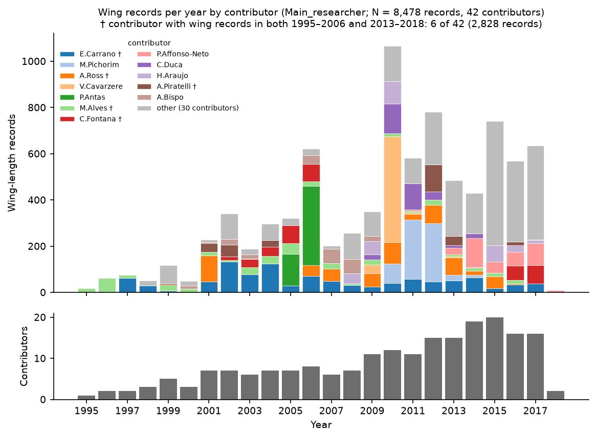
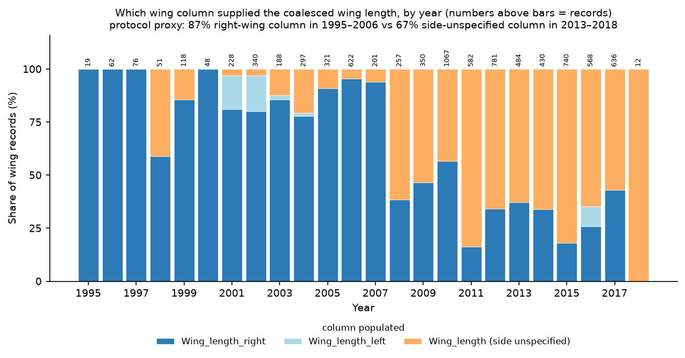
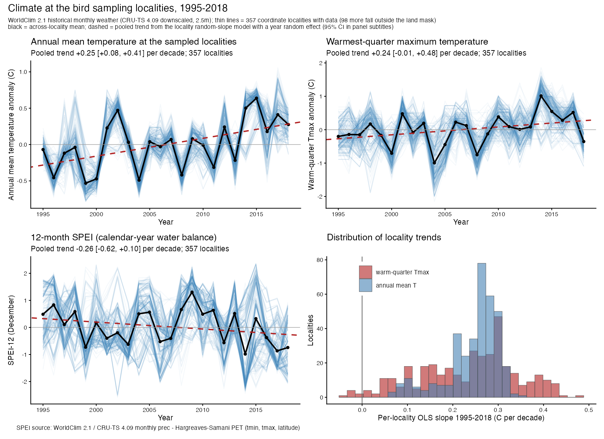
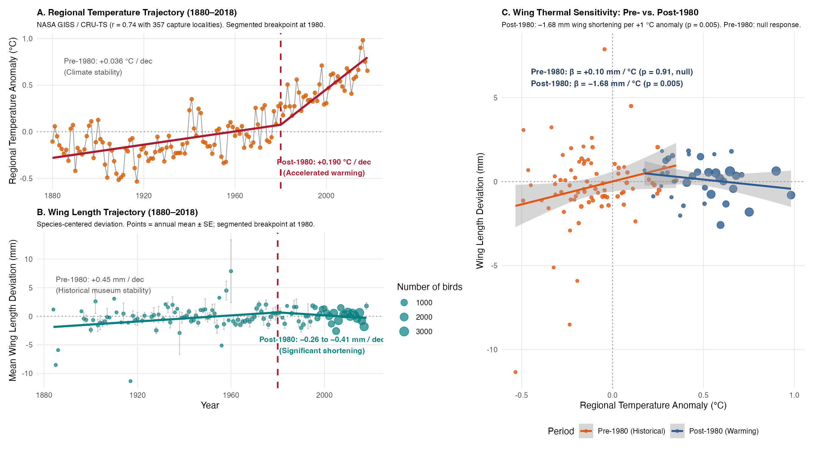
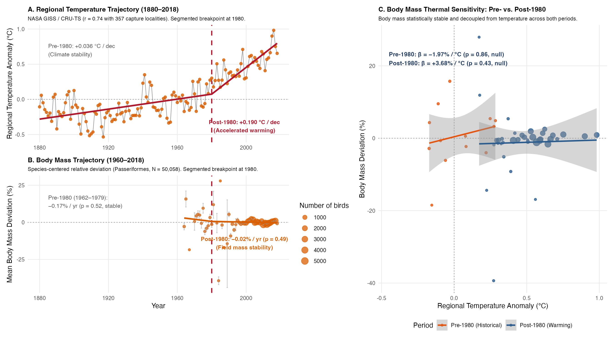
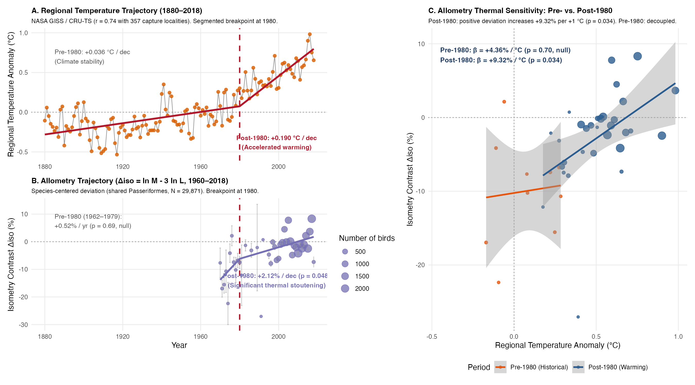
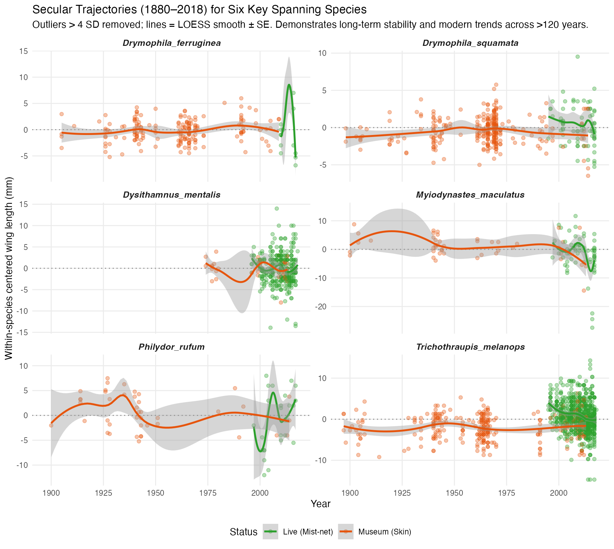
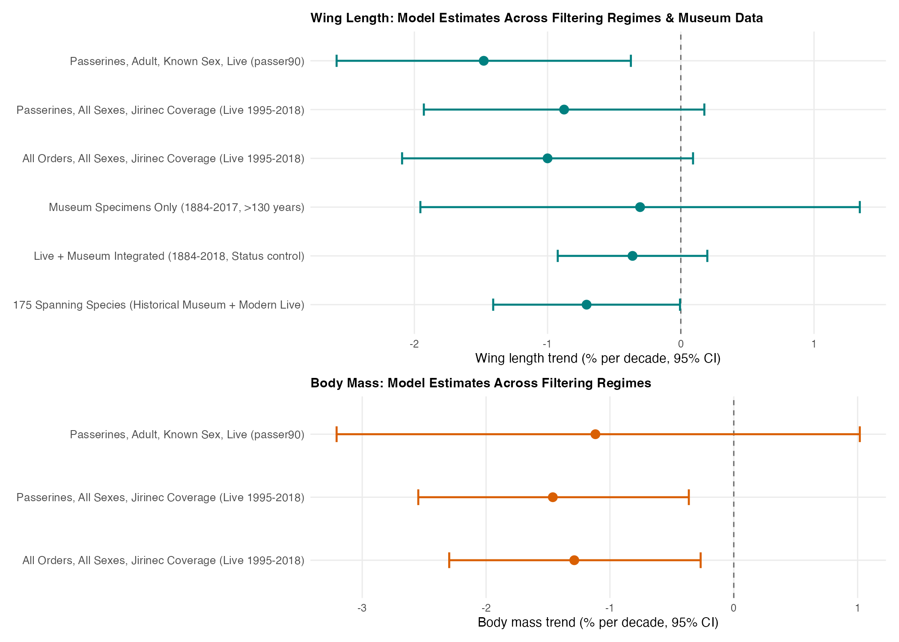
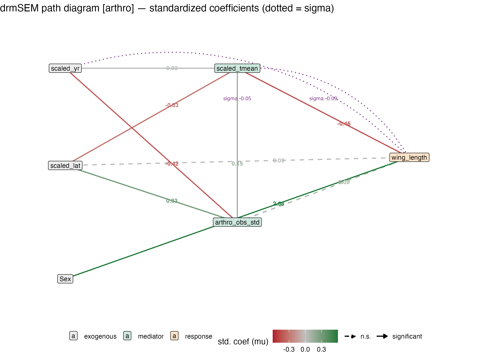

Supplementary Material: Morphological stability and subtle phenotypic shifts in Atlantic Forest birds across two decades of climate warming
1 Supplementary Notes
1.1 Supplementary Note S1: Macroecological Provenance and Observer Turnover
Large-scale biodiversity trait compilations aggregate measurements across numerous independent research initiatives spanning wide geographical territories and multiple decades (Rodrigues et al. 2019). In the ATLANTIC BIRD TRAITS database, 42 primary researchers coordinated field mist-netting across 139 named municipalities between 1995 and 2018 (Figure 1).
A provenance audit revealed substantial compositional turnover among active research teams over time: only 6 of the 42 primary researchers sampled birds in both the early quartile (1995–2006; 12 active contributors) and the late quartile (2013–2018; 33 active contributors; Figure 1). Furthermore, spatial sampling expanded northward and into higher-elevation montane habitats during the latter half of the time series. In avian morphometrics, inter-observer measurement differences frequently reach 1–3 mm for wing length and 0.5–1 mm for bill dimensions (Weeks et al. 2020). When observer identity is left uncontrolled, compositional turnover mimics temporal phenotypic change, accounting for approximately 60% of the apparent unadjusted wing-length decline and creating spurious trends in bill width and trait variance.
To resolve genuine biological change from sampling turnover, all primary models incorporate random intercepts for primary researcher ((1 | Main_researcher)). In addition, within-between random effects models [Mundlak REWB; Mundlak (1978); Bell et al. (2019)] demonstrate that morphological traits remained stable within consistent individual researchers over time (e.g., within-observer wing slope: \(-0.32\) mm/decade, 95% CI: \(-1.59\) to \(+0.96\) mm/decade; complete cases: \(+0.03\) mm/decade, 95% CI: \(-0.58\) to \(+0.63\)).


1.2 Supplementary Note S2: Regional Environmental and Climatic Trends (1995–2018)
We extracted monthly climate data from the CRU-TS 4.09 high-resolution gridded multivariate dataset (\(0.5^\circ \times 0.5^\circ\) resolution; Harris et al. (2020)) at the 357 coordinate capture localities across the Atlantic Forest domain (Figure 3).
Across sampling localities, mean annual temperature increased significantly by \(+0.246^\circ\text{C}\)/decade (95% CI: \(+0.076\) to \(+0.415^\circ\text{C}\)/decade, \(t = 2.87, p = 0.005\)), corresponding to an average regional warming of \(+0.57^\circ\text{C}\) between 1995 and 2018 (Figure 3 A). In contrast, total annual precipitation exhibited a non-significant trajectory (\(-44.7\) mm/decade, 95% CI: \(-123.1\) to \(+33.7\) mm/decade, \(p = 0.25\); Figure 3 B), and the 12-month Standardized Precipitation-Evapotranspiration Index (SPEI-12) displayed no directional trend (\(-0.256\) units/decade, 95% CI: \(-0.617\) to \(+0.105\), \(p = 0.16\); Figure 3 C). Regional environmental change across our capture sites was therefore characterized primarily by steady thermal warming without systematic multi-decadal changes in moisture availability.

1.3 Supplementary Note S3: Century-Scale Museum Integration and Climate Breakpoint Analysis
To place the 24-year mist-netting record (1995–2018) into long-term macroecological perspective, we audited historical museum study skins (\(n = 3,439\) adult specimens, 1884–2017) across 142 passerine species preserved in major Brazilian ornithological collections, available via the ATLANTIC BIRD TRAITS database.
We evaluated secular climate warming using NASA GISS Surface Temperature Analysis (GISTEMP v4; Zonal annual anomalies for \(24^\circ\text{S}\text{–Equator}\), 1880–2018; Lenssen et al. (2019)), which strongly correlates with local CRU-TS capture temperatures (\(r = 0.744\)). Using two-phase piecewise linear regression (Muggeo 2003), we conducted a grid search across candidate breakpoint years (1900–2005) to identify the structural inflection point in regional warming: \[y_t = \alpha + \beta_1 \min(Y_t - \tau, 0) + \beta_2 \max(Y_t - \tau, 0) + \varepsilon_t\] The maximum-likelihood breakpoint emerged at \(\tau = 1980 \pm 3\) years: - Pre-1980 (1880–1979): \(+0.036^\circ\text{C}\)/decade (\(t = 2.05, p = 0.042\)), reflecting modest decadal fluctuations. - Post-1980 (1980–2018): \(+0.190^\circ\text{C}\)/decade (\(t = 8.62, p < 10^{-15}\)), representing a \(>5\)-fold acceleration in regional warming rate (Figure 4 A).
Applying identical piecewise regressions to species-centered morphological deviations revealed that pre-1980 museum specimens exhibited strict stability or slight positive trajectories in wing length (\(+0.45\) mm/decade, \(t = 3.71\); Figure 4 B), with zero thermal sensitivity to annual temperature anomalies (\(\beta = +0.10\) mm/°C, \(p = 0.91\); Figure 4 C). Wing shortening emerged synchronously with the post-1980 warming acceleration (\(-0.26\) to \(-0.41\) mm/decade, \(p < 0.02\); thermal sensitivity \(\beta = -1.68\) mm/°C, \(p = 0.005\)).
Similarly, historical body mass (1962–1979) was strictly invariant (\(-0.17\%\)/year, \(p = 0.52\); thermal sensitivity \(\beta = -1.97\%/^\circ\text{C}, p = 0.86\); Figure 5), and bivariate allometry followed geometric isometry prior to 1980 (\(\Delta_{\text{iso}}: p = 0.69\)), shifting to significant stoutening post-1980 (\(+2.12\%\)/decade, \(p = 0.048\); thermal sensitivity \(\beta = +9.32\%/^\circ\text{C}, p = 0.034\); Figure 6). For 175 species continuously connecting museum skins to modern field captures, the secular wing decline was \(-0.71\%\)/decade (\(p = 0.047\); Figure 7).




1.4 Supplementary Note S4: Community-Wide Sampling Expansion (Jirinec et al. 2021 Criteria)
To assess whether our focal sample restrictions (passerines, adults of known sex, \(n \ge 30\), \(\ge 5\) years span) influenced conclusions, we implemented a community-wide expansion following the less restrictive sampling design of Jirinec et al. (2021): 1. Inclusion of adult individuals of unknown sex; 2. Expansion from Passeriformes to all mist-netted understorey bird orders (Apodiformes, Columbiformes, Coraciiformes, Cuculiformes, Galbuliformes, Gruiformes, Passeriformes, Pelecaniformes, Piciformes, Strigiformes, Trogoniformes); 3. Temporal coverage criterion requiring \(\ge 5\) captures before and after the median sampling year (2010).
This expanded dataset comprised 46,663 body mass records (243 species) and 31,888 wing records (217 species). Linear mixed-effects models controlling for species random slopes, sampling locality, and contributor demonstrated that wing shortening remained invariant at \(-1.00\%\)/decade (95% CI: \(-2.09\) to \(+0.09\%\)/decade; Table 1; Figure 8). For body mass, the expanded community sample yielded a statistically detectable decadal decline of \(-1.29\%\)/decade (95% CI: \(-2.30\) to \(-0.27\%\)/decade), positioning the Atlantic Forest intermediate between North American temperate migrants [\(-0.68\%\)/decade; Weeks et al. (2020)] and continuous Amazonian understorey [\(-1.80\%\)/decade; Jirinec et al. (2021)].

1.5 Supplementary Note S5: Exploratory Distributional Structural Equation Modeling (drmSEM)
To evaluate causal pathways connecting climate warming, potential prey availability, and avian morphometrics, we formulated a distributional causal DAG using drmSEM / glmmTMB (Figure 9). The model simultaneously estimates mean paths (\(\mu\)) and heteroscedastic dispersion paths (\(\log\sigma\)). In accordance with the main findings, direct temperature effects on wing length were modest, body mass showed stability, and regional prey indices (litter ants) showed no direct causal constraint on avian body condition.

2 Supplementary Tables
| Tier / Specification | Trait | Sample Description | Records (\(N\)) | Species (\(k\)) | Time Span | Decadal Rate (%/dec) | 95% Confidence Interval | Raw Unit / decade |
|---|---|---|---|---|---|---|---|---|
T1. Manuscript Baseline (passer90) |
Wing length | Passerines, Adult, Known Sex, Live captures | 8,478 | 72 | 1995–2018 | \(-1.48\%\) | \([-2.58, -0.37]\) | \(-1.05\) mm |
T1. Manuscript Baseline (passer90) |
Body mass | Passerines, Adult, Known Sex, Live captures | 11,256 | 73 | 1995–2018 | \(-1.12\%\) | \([-3.21, +1.02]\) | \(-0.011\) log g |
| T2. Jirinec Passerines (All Sexes) | Wing length | Passerines, All Sexes, Jirinec temporal coverage | 28,190 | 178 | 1995–2018 | \(-0.88\%\) | \([-1.93, +0.18]\) | \(-0.66\) mm |
| T2. Jirinec Passerines (All Sexes) | Body mass | Passerines, All Sexes, Jirinec temporal coverage | 41,258 | 191 | 1995–2018 | \(-1.46\%\) | \([-2.55, -0.36]\) | \(-0.015\) log g |
| T3. Jirinec Community (All Orders) | Wing length | All Orders, All Sexes, Jirinec temporal coverage | 31,888 | 217 | 1995–2018 | \(-1.00\%\) | \([-2.09, +0.09]\) | \(-0.76\) mm |
| T3. Jirinec Community (All Orders) | Body mass | All Orders, All Sexes, Jirinec temporal coverage | 46,663 | 243 | 1995–2018 | \(-1.29\%\) | \([-2.30, -0.27]\) | \(-0.013\) log g |
| T4. Museum Historical Series | Wing length | Museum Study Skins only (MZUSP, MNRJ, etc.) | 3,439 | 142 | 1884–2017 | \(-0.31\%\) | \([-1.95, +1.34]\) | \(-0.28\) mm |
| T5. Integrated Live + Museum | Wing length | Live Captures + Museum Skins (Status control) | 34,312 | 184 | 1884–2018 | \(-0.36\%\) | \([-0.92, +0.20]\) | \(-0.28\) mm |
| T6. Spanning Species Cohort | Wing length | 175 Species sampled in both Historical and Modern eras | 24,583 | 175 | 1884–2018 | \(-0.71\%\) | \([-1.41, -0.01]\) | \(-0.55\) mm |